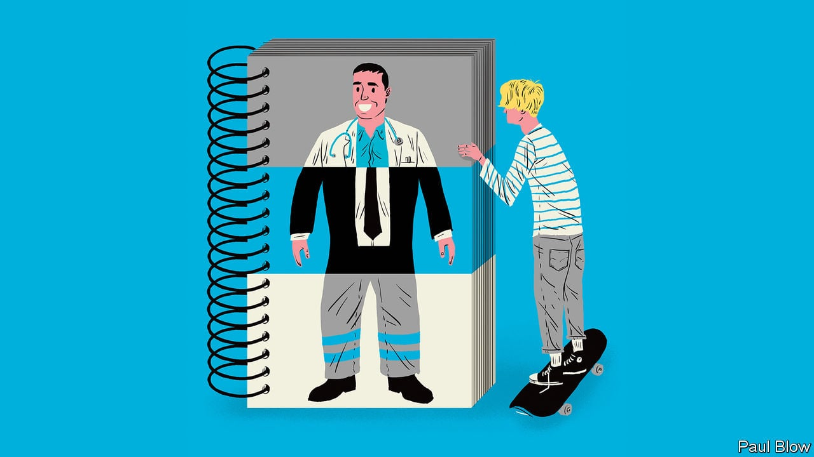

Hulaan ang mga salita na may kinalaman sa sektor ng paglilingkod upang mabuksan ang ikaapat na Aralin.

● Ang umaalalay sa buong yugto ng produksyon, distribusyon, kalakalan, at pagkonsumo ng mga produkto sa loob o labas ng bansa.
● Kilala rin ito bilang tersarya o ikatlong sektor ng ekonomiya matapos ang agrikultura at industriya.
Transportasyon, Komunikasyon, at mga Imbakan: Mga serbisyong pampublikong sasakyan, paglilingkod ng telepono, at mga pinapaupahang bodega.
Kalakalan: Pagpapalitan ng iba’t ibang produkto at serbisyo.
Pananalapi: Serbisyong may kinalaman sa bangko, insurance, at pamumuhunan.
Nagbibigay ng tulong pinansyal gaya ng mga bangko, bahay-sanglaan, atbp.
Paupahang Bahay at Real Estate: Mga paupahan tulad ng apartment, subdivision, townhouse, condominium.
Paglilingkod ng Pampribado: Lahat ng mga serbisyo mula sa pribadong sektor.
Paglilingkod ng Pampubliko: Lahat ng serbisyo na ipinagkakaloob ng pamahalaan.
Department of Labor and Employment: Pangangalaga sa kapakanan ng mga manggagawang Pilipino, maayos na oportunidad sa trabaho, at regulasyon ng paggawa.
Overseas Workers Welfare Administration: Tumitingin sa kapakanan ng mga Overseas Filipino Workers.
Philippine Overseas Employment Administration: Isulong at paunlarin ang mga programa ukol sa paghahanapbuhay sa ibayong-dagat at pangalagaan ang kapakanan ng mga OFW.
Itinatag sa bisa ng Executive Order 797 (1982).
Technical Education and Skills Development Authority: Hikayatin ang buong partisipasyon ng industriya, paggawa, lokal na pamahalaan, at institusyong teknikal at bokasyonal.
Itinatag sa bisa ng R.A. 7796 (1994).
Professional Regulation Commission: Nangangasiwa sa gawain ng mga manggagawang propesyonal upang matiyak ang kahusayan.
Commission on Higher Education: Nangangasiwa sa pamantasan at kolehiyo upang maitaas ang kalidad ng edukasyon.
Unemployement
* Structural Unemployement
* Cyclical Unemployement
* Seasonal Unemployement
Job Mismatch
Brain Drain
Underemployement
Artikulo 94 - Holiday Pay: Bayad ng manggagawa kahit hindi pumasok sa araw ng pista opisyal.
Republic Act 6727 - Wage Rationalization Act: Pagsasaayos ng minimum wage.
Artikulo 91-93 - Premium Pay: Karagdagang bayad sa loob ng walong oras sa araw ng pahinga at special days.
Artikulo 87 - Overtime Pay: Bayad sa pagtatrabaho lampas sa 8 oras.
Artikulo 86 - Night Shift Differential: Bayad sa pagtatrabaho sa gabi, hindi bababa sa 10% ng regular na sahod sa bawat oras sa pagitan ng 10PM-6AM.
Artikulo 96 - Service Charges: Karapatan sa 85% ng service charges.
Artikulo 95 - Service Incentive Leave: Taunang leave ng limang araw.
Republic Act 1161 - Maternity Leave: Benepisyo sa nagdadalang-taong manggagawa.
Republic Act 8972 - Paternity Leave para sa mga solong magulang: Para sa solong magulang o indibidwal na may responsibilidad sa pagiging magulang.
Republic Act 8187 - Paternity Leave: Maaaring gamitin ng empleyadong lalaki sa unang apat na araw mula nang manganak ang legal na asawa.
Presidential Decree 851 - Thirteenth Month Pay: Bayad bago ika-24 ng Disyembre.
Presidential Decree 626 - Benepisyo sa Employees Compensation Program: Compensation package sa manggagawa sakaling may pagkakasakit na may kaugnayan sa trabaho.